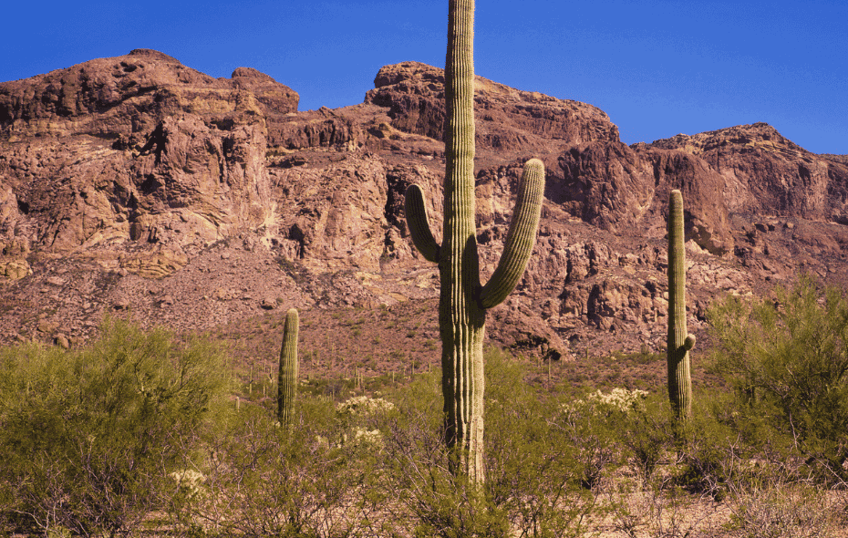
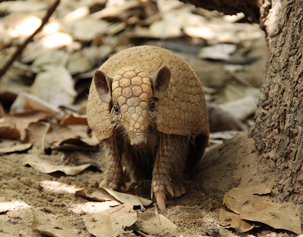
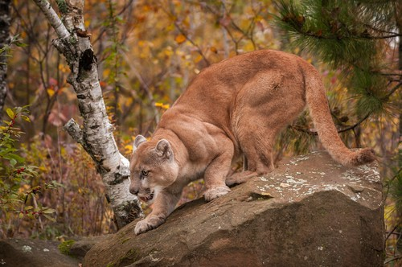

O bioma da caatinga brasileira se estende no Sertão Nordestino, prolongando-se pelo norte de Minas Gerais. Apresenta uma vegetação xenófila, correspondente aos vegetais adaptados ao clima tropical semiárido, como o umbuzeiro, o xique-xique, o juazeiro, a carnaubeira, algumas palmeiras, o mandacaru etc. Da área total original da caatinga, de 1,1 milhão de km², cerca de 800 mil km² sofreram processo de desertificação e salinização do solo. Estima-se que 40 mil km² da caatinga já foram transformados em deserto.
A região foi bastante explorada pelo corte da vegetação para servir como lenha, pelo pastoreio desde o século XVI e pela prática de uma agricultura inadequada ao ecossistema. A salinização é fruto do manejo indevido do solo, agravada pela evaporação resultado das altas temperaturas.
O clima da caatinga é o tropical semiárido, com médias de temperaturas anuais elevadas, geralmente superiores a 25°C, em alguns lugares superior a 32°C, e por chuvas escassas e irregulares com longos períodos de seca.
Desde 1951 foi fixado os limites da área do Nordeste brasileiro atingida pela seca, que recebeu o nome de Polígono das Secas, que corresponde a uma área total de 950.000 km², aproximadamente 10% da área territorial do Brasil. Para se ter uma ideia dessa extensão, ela corresponde a quase dez vezes a área do estado de Pernambuco (98.311,6 km²). A área atingida pela seca vem crescendo em parte devido ao desmatamento e a fenômenos climáticos como o aquecimento global. O estado do Maranhão que antes não estava dentro do Polígono, hoje tem parte do seu território atingido pela seca da região.
Várias áreas do Vale Médio do Rio São Francisco, onde estão localizadas as cidades de Petrolina, Belém de São Francisco, Lagoa Grande (PE) e Juazeiro (BA), entre outras. Elas foram beneficiadas com a irrigação, que combinada com o clima semiárido e técnicas modernas, transformou as cidades em grandes produtoras de frutas, entre elas, uva, manga, melão, abacaxi, mamão etc., comercializadas no mercado interno e externo. Na região foram instaladas grandes vinícolas.
Existem mais de 1200 espécies de animais da caatinga, sendo algumas exclusivas desse bioma. Estima-se a existência de 45 espécies de anfíbios, 240 de peixes, 95 de répteis e 975 de aves. Exemplos dos animais da caatinga são a jaguatirica, a arara-vermelha, a ararinha-azul, a preguiça-comum, o jaguarundi, o bem-te-vi, o carcará, a arara-azul-de-lear, o tiziu, o periquito-de-bochecha-parda, e vários outros.
 